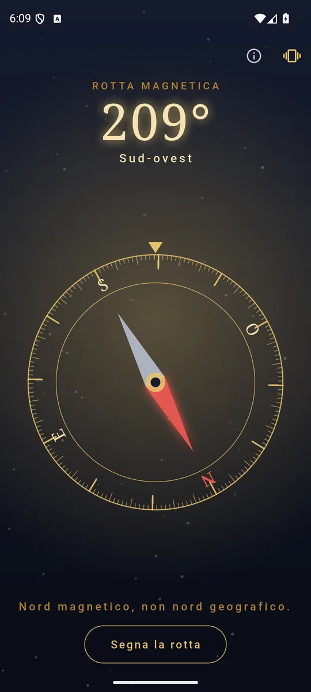
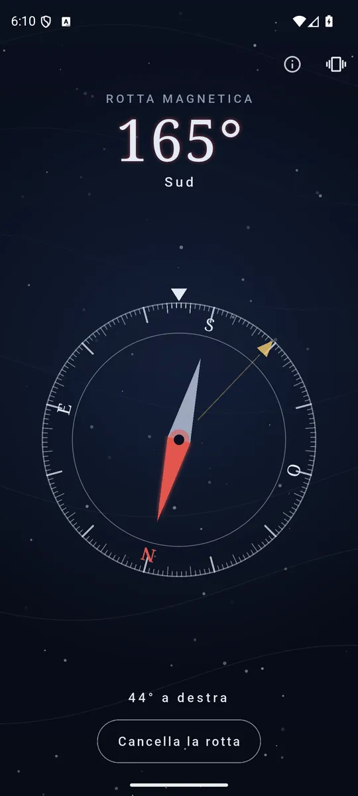
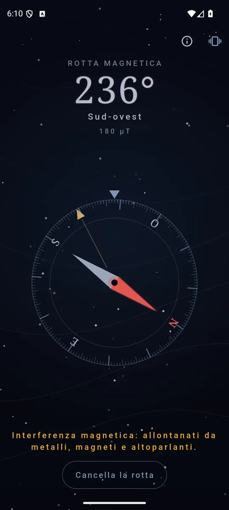

ItalianoEnglish
It opens straight onto the dial, already turning. The card is engraved and turns under a fixed index, the way a real compass does: what you need to read is always at the top, and you never chase a needle around the screen.

The card turns, the index does not: you always read at the top. 
Mark a bearing and the app says how far to turn. 
When the field is disturbed it says so, instead of keeping quiet.
What it does
- The bearing in degrees and in words. "212° · South-west": the number for using it, the name for saying it out loud.
- The card turns, the index does not. That is the way round a real compass works, and it changes how you read it: under the fixed mark is always the direction you are facing.
- Tilt-compensated. It works with the phone in your hand, not only flat on a table — which is how a compass actually gets used.
- Mark a bearing and follow it. The app tells you how far to turn and buzzes when you are on it: no need to watch the screen while you walk.
- Honest warnings. When metal or magnets disturb the field, Compass says so instead of pretending everything is fine.
- In English and Italian, following the phone's language.
When the compass cannot work, it says so
A magnetometer inside a phone is a delicate thing: a railing, a car door, a loudspeaker or a case with a magnetic clasp is enough to move the reading by tens of degrees. This app's choice is to say it — a warning when the field is disturbed, and a plain message on a device that has no magnetometer at all. A needle that keeps turning confidently while pointing the wrong way is worse than no needle.
Your data stays yours
Compass does not ask for your location: the bearing is magnetic north, computed on the phone from the sensor. Readings never leave the device, there is no account and there is no server of ours. Two permissions: Internet, which the ads need, and vibration for the haptic feedback — which you can switch off.
How it is paid for
A banner at the bottom, away from the controls, and an occasional full-screen ad only after you got what you came for. No subscription, no feature held hostage.
Where to find it
Not on Google Play yet. The link will appear here when it is.